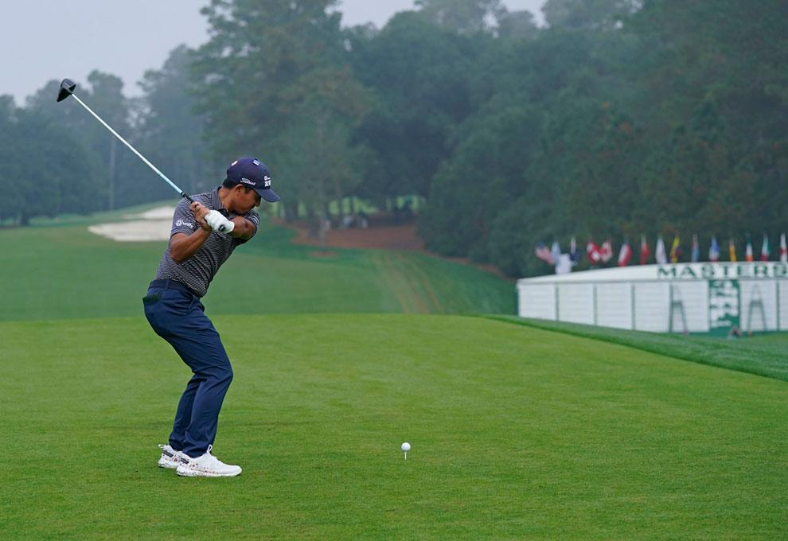
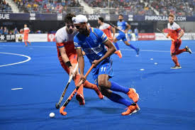
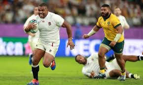
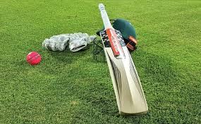
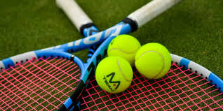

Football Football is a family of team sports that involve, to varying degrees, kicking a ball to score a goal. Unqualified, the word football normally means the form of football that is the most popular where the word is used. Read More
 Golf Golf is a club-and-ball sport in which players use various clubs to hit balls into a series of holes on a course in as few strokes as possible Read More
 Hockey Hockey is a sport in which two teams play against each other by trying to manoeuvre a ball or a puck into the opponent's goal using a hockey stick. There are many types of hockey such as bandy, field hockey, ice hockey and rink hockey. Read more
 Rugby Rugby union, widely known simply as rugby, is a full-contact team sport that originated in England in the first half of the 19th century. One of the two codes of rugby football, it is based on running with the ball in hand Read More
 Cricket Cricket is a bat-and-ball game played between two teams of eleven players on a field at the centre of which is a 22-yard (20-metre) pitch with a wicket at each end, each comprising two bails balanced on three stumps Read More
 Tennis Tennis is a racket sport that can be played individually against a single opponent or between two teams of two players each. Each player uses a tennis racket that is strung with cord to strike a hollow rubber ball covered with felt over or around a net and into the opponent's court. Read More